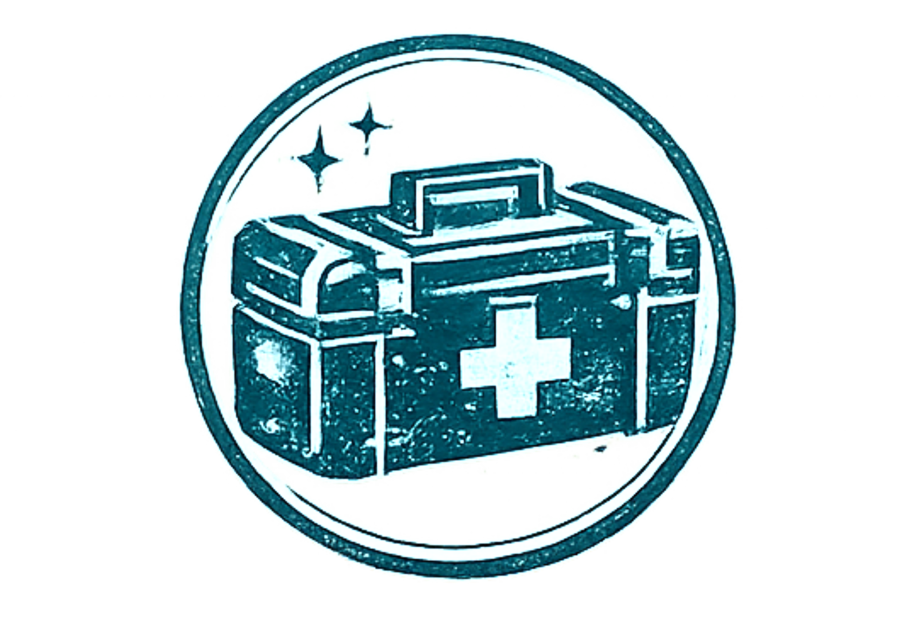
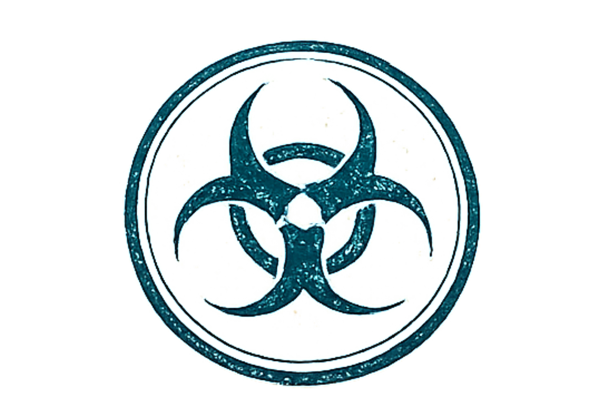

NECROSIS é uma experiência de RPG survival horror inspirada na tensão, no gerenciamento de recursos e no terror biológico de clássicos como Resident Evil.
Aqui, sobreviver não significa vencer todas as lutas. Significa escolher quando lutar, quando fugir, quando cooperar e quando aceitar que cada bala, cada cura e cada decisão pode ser a última.
Clique em revelar para saber mais sobre cada tópico.

A sobrevivência depende daquilo que você encontra. Munição, medicamentos e ferramentas são escassos.
Nem toda luta deve ser vencida. Fugir é uma opção tão importante quanto atacar.

Algumas criaturas podem transmitir agentes biológicos. Quanto maior a infecção, menores suas chances.
Nenhum sobrevivente escapa sozinho. Cooperar pode ser a diferença entre a vida e a morte.
A cidade costeira de Lilly Cover sempre sobreviveu de rumores, tempestades e silêncio.
Durante décadas, a família Grayford manteve influência sobre hospitais, laboratórios, contratos militares e instalações privadas espalhadas pela região.
Oficialmente, eram benfeitores. Financiadores de pesquisa, segurança pública e desenvolvimento urbano.
Extraoficialmente, seus nomes começaram a aparecer em relatórios apagados, arquivos corrompidos e investigações que nunca chegaram ao público.
Em outubro de 2003, algo mudou.
Equipes desapareceram. Comunicações foram cortadas. Hospitais receberam pacientes com sintomas impossíveis. E os primeiros sobreviventes começaram a falar sobre criaturas nas ruas.
Agora, aqueles que entram em Lilly Cover não procuram respostas por curiosidade.
Procuram porque talvez já seja tarde demais para fugir.